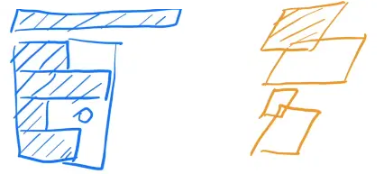

Transformer架构解析
Transformer架构解析
本文主要来自：The Annotated Transformer
论文地址: https://arxiv.org/pdf/1810.04805.pdf
代码链接：personal/transformer · GitHub
1.Transformer架构图
1.1 Transformer模型的作用
基于seq2seq架构的transformer模型可以完成NLP领域研究的典型任务, 如机器翻译, 文本生成等. 同时又可以构建预训练语言模型，用于不同任务的迁移学习.
https://www.bilibili.com/video/BV1qh4y1o7UU
1.2 Transformer总体架构

（1）输入部分
- 源文本嵌入层及其位置编码器
- 目标文本嵌入层及其位置编码器
（2）输出部分
- 线性层
- softmax层
（3）编码器
- 由N个编码器层堆叠而成
- 每个编码器层由两个子层连接结构组成
- 第一个子层连接结构包括一个多头自注意力子层和规范化层以及一个残差连接
- 第二个子层连接结构包括一个前馈全连接子层和规范化层以及一个残差连接
（4）解码器部分:
- 由N个解码器层堆叠而成
- 每个解码器层由三个子层连接结构组成
- 第一个子层连接结构包括一个多头自注意力子层和规范化层以及一个残差连接
- 第二个子层连接结构包括一个多头注意力子层和规范化层以及一个残差连接
- 第三个子层连接结构包括一个前馈全连接子层和规范化层以及一个残差连接
2.输入部分Embeddings
2.1文本嵌入层
无论是源文本嵌入还是目标文本嵌入，都是为了将文本中词汇的数字表示转变为向量表示, 希望在这样的高维空间捕捉词汇间的关系.
（1）实现
- 初始化函数以
d_model， 词嵌入维度, 和vocab， 词汇总数为参数, 内部主要使用了nn中的预定层Embedding进行词嵌入. - 在forward函数中, 将输入x传入到Embedding的实例化对象中, 然后乘以一个根号下
d_model进行缩放, 控制数值大小。 - 它的输出是文本嵌入后的结果。
1 | # torch中变量封装函数Variable. |
（2）测试
1 | # 词嵌入维度是512维 |
1 | embr: Variable containing: |
2.2 位置编码器PositionalEncoding
因为在Transformer的编码器结构中, 并没有针对词汇位置信息的处理，因此需要在Embedding层后加入位置编码器，将词汇位置不同可能会产生不同语义的信息加入到词嵌入张量中, 以弥补位置信息的缺失.
使用不同频率的正弦和余弦函数：
其中$pos$是位置，$i$ 是维度。也就是说，位置编码的每个维度对应于一个正弦曲线。 这些波长形成一个从 $2\pi$ 到 $10000 \cdot 2\pi$的集合级数。我们选择这个函数是因为我们假设它会让模型很容易学习对相对位置的关注，因为对任意确定的偏移k , $PE{pos+k}$可以表示为 $PE{pos}$的线性函数。
（1）实现
- 初始化函数以
d_model,dropout,max_len为参数, 分别代表d_model: 词嵌入维度,dropout: 置0比率,max_len: 每个句子的最大长度. - forward函数中的输入参数为x, 是Embedding层的输出.
- 最终输出一个加入了位置编码信息的词嵌入张量.
1 | # 定义位置编码器类, 我们同样把它看做一个层, 因此会继承nn.Module |
（2）测试
1 | # 词嵌入维度是512维 |
1 | pe_result: Variable containing: |
（3）绘制词汇向量中特征的分布曲线
1 | import matplotlib.pyplot as plt |
效果分析：
- 每条颜色的曲线代表某一个词汇中的特征在不同位置的含义.
- 保证同一词汇随着所在位置不同它对应位置嵌入向量会发生变化。
- 正弦波和余弦波的值域范围都是1到-1这又很好的控制了嵌入数值的大小, 有助于梯度的快速计算。
3.编码器
- 由N个编码器层堆叠而成
- 每个编码器层由两个子层连接结构组成
- 第一个子层连接结构包括一个多头自注意力子层和规范化层以及一个残差连接
- 第二个子层连接结构包括一个前馈全连接子层和规范化层以及一个残差连接
3.1 掩码张量subsequent_mask
掩代表遮掩，码就是我们张量中的数值，它的尺寸不定，里面一般只有1和0的元素，代表位置被遮掩或者不被遮掩，至于是0位置被遮掩还是1位置被遮掩可以自定义，因此它的作用就是让另外一个张量中的一些数值被遮掩，也可以说被替换, 它的表现形式是一个张量
掩码张量的作用：在transformer中, 掩码张量的主要作用在应用attention时，有一些生成的attention张量中的值计算有可能已知了未来信息而得到的，未来信息被看到是因为训练时会把整个输出结果都一次性进行Embedding，但是理论上解码器的的输出却不是一次就能产生最终结果的，而是一次次通过上一次结果综合得出的，因此，未来的信息可能被提前利用。
（1）实现
1 | def subsequent_mask(size): |
（2）测试
1 | # 生成的掩码张量的最后两维的大小 |
1 | tensor([[[1, 0, 0, 0, 0], |
（3）掩码张量的可视化
1 | plt.figure(figsize=(5,5)) |
效果分析:
- 通过观察可视化方阵, 黄色是1的部分, 这里代表被遮掩, 紫色代表没有被遮掩的信息, 横坐标代表目标词汇的位置, 纵坐标代表可查看的位置;
- 我们看到, 在0的位置我们一看望过去都是黄色的, 都被遮住了，1的位置一眼望过去还是黄色, 说明第一次词还没有产生, 从第二个位置看过去, 就能看到位置1的词, 其他位置看不到, 以此类推.
3.2 注意力机制Attention
（1）什么是注意力
我们观察事物时，之所以能够快速判断一种事物（当然允许判断是错误的）, 是因为我们大脑能够很快把注意力放在事物最具有辨识度的部分从而作出判断，而并非是从头到尾的观察一遍事物后，才能有判断结果。正是基于这样的理论，就产生了注意力机制。
Attention功能可以描述为将query和一组key-value对映射到输出，其中query、key、value和输出都是向量。输出为value的加权和，其中每个value的权重通过query与相应key的兼容函数来计算。
具体来说，output 是 value 的一个加权和 —> 输出的维度 == value 的维度。output 中 value 的权重 = 查询 query 和对应的 key 的相似度 ；权重等价于 query 和对应的 key 的相似度
图中，红色表示value，蓝色表示key：
- 给定q为黄色，靠近key的第一第二个，所以output更多偏向与value的第一和第二个；
- 给定q为绿色，靠近key的第二第三个，所以output更多偏向于value的第二和第三个。
虽然 key-value 并没有变，但是随着 query 的改变，因为权重的分配不一样，导致 输出会有不一样，这就是注意力机制。
（2）注意力计算规则
需要三个指定的输入Q(query), K(key), V(value)， 然后通过公式得到注意力的计算结果, 这个结果代表query在key和value作用下的表示。而这个具体的计算规则有很多种，我这里只介绍我们用到的这一种.
（3）Q, K, V的比喻解释
假如我们有一个问题： 给出一段文本，使用一些关键词对它进行描述!
为了方便统一正确答案，这道题可能预先已经给大家写出了一些关键词作为提示.其中这些给出的提示就可以看作是key， 而整个的文本信息就相当于是query，value的含义则更抽象，可以比作是你看到这段文本信息后，脑子里浮现的答案信息，这里我们又假设大家最开始都不是很聪明，第一次看到这段文本后脑子里基本上浮现的信息就只有提示这些信息，因此key与value基本是相同的，但是随着我们对这个问题的深入理解，通过我们的思考脑子里想起来的东西原来越多，并且能够开始对我们query也就是这段文本，提取关键信息进行表示. 这就是注意力作用的过程， 通过这个过程，我们最终脑子里的value发生了变化，根据提示key生成了query的关键词表示方法，也就是另外一种特征表示方法.
刚刚说到key和value一般情况下默认是相同，与query是不同的，这种是我们一般的注意力输入形式，但有一种特殊情况，就是我们query与key和value相同，这种情况我们称为自注意力机制，就如同我们的刚刚的例子， 使用一般注意力机制，是使用不同于给定文本的关键词表示它. 而自注意力机制，需要用给定文本自身来表达自己，也就是说你需要从给定文本中抽取关键词来表述它, 相当于对文本自身的一次特征提取.
（4）注意力机制
注意力机制是注意力计算规则能够应用的深度学习网络的载体, 除了注意力计算规则外, 还包括一些必要的全连接层以及相关张量处理, 使其与应用网络融为一体。使用自注意力计算规则的注意力机制称为自注意力机制。
将particular attention称之为“缩放的点积Attention”(Scaled Dot-Product Attention”)。其输入为query、key(维度是$d_k$)以及values(维度是$d_v$)。我们计算query和所有key的点积，然后对每个除以 $\sqrt{d_k}$ , 最后用softmax函数获得value的权重。
两个最常用的attention函数是加法attention(cite)和点积（乘法）attention。除了缩放因子 $\frac{1}{\sqrt{d_k}}$ ，点积Attention跟我们的平时的算法一样。加法attention使用具有单个隐层的前馈网络计算兼容函数。虽然理论上点积attention和加法attention复杂度相似，但在实践中，点积attention可以使用高度优化的矩阵乘法来实现，因此点积attention计算更快、更节省空间。
当 $dk$ 的值比较小的时候，这两个机制的性能相近。当 $d_k$ 比较大时，加法attention比不带缩放的点积attention性能好 (cite)。我们怀疑，对于很大的 $d_k$ 值, 点积大幅度增长，将softmax函数推向具有极小梯度的区域。(为了说明为什么点积变大，假设$q$和$k$是独立的随机变量，均值为0，方差为1。那么它们的点积 $q \cdot k = \sum{i=1}^{d_k} q_ik_i$ , 均值为0方差为$d_k$ )。为了抵消这种影响，我们将点积缩小 $\frac{1}{\sqrt{d_k}}$ 倍。
为什么Attention中除以$\sqrt{d}$ 这么重要？
Attention的计算是在内积之后进行softmax，主要涉及的运算是$e^{q \cdot k}$，可以大致认为内积之后、softmax之前的数值在$-3\sqrt{d}$到$3\sqrt{d}$这个范围内，由于d通常都至少是64，所以$e^{3\sqrt{d}}$比较大而 $e^{-3\sqrt{d}}$比较小，因此经过softmax之后，Attention的分布非常接近一个one hot分布了，这带来严重的梯度消失问题，导致训练效果差。（例如y=softmax(x)在|x|较大时进入了饱和区，x继续变化y值也几乎不变，即饱和区梯度消失）
相应地，解决方法就有两个:
像NTK参数化那样，在内积之后除以 $\sqrt{d}$，使q⋅k的方差变为1，对应$e^3,e^{−3}$都不至于过大过小，这样softmax之后也不至于变成one hot而梯度消失了，这也是常规的Transformer如BERT里边的Self Attention的做法
另外就是不除以 $\sqrt{d}$，但是初始化q,k的全连接层的时候，其初始化方差要多除以一个d，这同样能使得使q⋅k的初始方差变为1，T5采用了这样的做法。
（5）代码实现
- 输入就是Q，K，V以及mask和dropout, mask用于掩码, dropout用于随机置0.
- 输出有两个, query的注意力表示以及注意力张量.
1 | def attention(query, key, value, mask=None, dropout=None): |
（6）测试
1 | from embedding import Embeddings |
1 | attn: tensor([[[ -6.9986, -22.1325, 44.3268, ..., 0.0000, -2.9953, -3.8844], |
待用mask的输出效果
1 | query = key = value = pe_result |
1 | # query的注意力表示: |
3.3 多头注意力机制MultiHeadAttention
（1）什么是多头注意力机制
从多头注意力的结构图中，貌似这个所谓的多个头就是指多组线性变换层，其实并不是，我只有使用了一组线性变化层，即三个变换张量对Q，K，V分别进行线性变换，这些变换不会改变原有张量的尺寸，因此每个变换矩阵都是方阵，得到输出结果后，多头的作用才开始显现，每个头开始从词义层面分割输出的张量，也就是每个头都想获得一组Q，K，V进行注意力机制的计算，但是句子中的每个词的表示只获得一部分，也就是只分割了最后一维的词嵌入向量。这就是所谓的多头，将每个头的获得的输入送到注意力机制中, 就形成多头注意力机制.
Multi-head attention允许模型共同关注来自不同位置的不同表示子空间的信息，如果只有一个attention head，它的平均值会削弱这个信息。
其中映射由权重矩阵完成：$ W^Qi \in \mathbb{R}^{d \times dk}
$ , $W^K_i \in \mathbb{R}^{d{\text{model}} \times dk}$ , $W^V_i \in \mathbb{R}^{d{\text{model}} \times dv}$ 和 $W^O_i \in \mathbb{R}^{hd_v \times d{\text{model}} }$ 。
（2）多头注意力作用
这种结构设计能让每个注意力机制去优化每个词汇的不同特征部分，从而均衡同一种注意力机制可能产生的偏差，让词义拥有来自更多元的表达，实验表明可以从而提升模型效果.
为什么要做多头注意力机制呢？
- 一个 dot product 的注意力里面，没有什么可以学的参数。具体函数就是内积，为了识别不一样的模式，希望有不一样的计算相似度的办法。加性 attention 有一个权重可学，也许能学到一些内容。
- multi-head attention 给 h 次机会去学习 不一样的投影的方法，使得在投影进去的度量空间里面能够去匹配不同模式需要的一些相似函数，然后把 h 个 heads 拼接起来，最后再做一次投影。
- 每一个头 hi 是把 Q,K,V 通过 可以学习的 Wq, Wk, Wv 投影到 dv 上，再通过注意力函数，得到 headi。
（3）实现
- 因为多头注意力机制中需要使用多个相同的线性层, 首先实现了克隆函数clones.
- clones函数的输入是module，N，分别代表克隆的目标层，和克隆个数.
- clones函数的输出是装有N个克隆层的Module列表.
- 接着实现MultiHeadedAttention类, 它的初始化函数输入是h, d_model, dropout分别代表头数，词嵌入维度和置零比率.
- 它的实例化对象输入是Q, K, V以及掩码张量mask.
- 它的实例化对象输出是通过多头注意力机制处理的Q的注意力表示.
1 | import copy |
（4）测试
1 | d_model = 512 |
1 | tensor([[[-2.3411, -0.8430, -4.1038, ..., 1.4731, -0.7992, 0.9026], |
3.4 前馈全连接层PositionwiseFeedForward
在Transformer中前馈全连接层就是具有两层线性层的全连接网络.
（1）前馈全连接层作用
考虑注意力机制可能对复杂过程的拟合程度不够, 通过增加两层网络来增强模型的能力.
Position就是序列中每个token，
Position-wise就是把MLP对每个token作用一次，且作用的是同一个MLP。
（2）代码实现
- 实例化参数为
d_model,d_ff,dropout, 分别代表词嵌入维度, 线性变换维度, 和置零比率. - 输入参数x, 表示上层的输出.
- 输出是经过2层线性网络变换的特征表示.
1 | class PositionwiseFeedForward(nn.Module): |
（3）测试
1 | d_model = 512 |
1 | torch.Size([2, 4, 512]) |
3.5 规范化层LayerNorm
（1）规范化层作用
它是所有深层网络模型都需要的标准网络层，因为随着网络层数的增加，通过多层的计算后参数可能开始出现过大或过小的情况，这样可能会导致学习过程出现异常，模型可能收敛非常的慢。 因此都会在一定层数后接规范化层进行数值的规范化，使其特征数值在合理范围内.
（2）代码实现
- 实例化参数有两个,
features和eps，分别表示词嵌入特征大小，和一个足够小的数. - 输入参数x代表来自上一层的输出.
- 输出就是经过规范化的特征表示.
1 | class LayerNorm(nn.Module): |
（3）测试
1 | features = d_model = 512 |
1 | torch.Size([2, 4, 512]) |
（3）LayerNorm 和 BatchNorm
BatchNorm 简单的 2 维 情况（蓝色）
- 每一行是一个样本 X，每一列是 一个 feature
- BatchNorm：每次把一列（1 个 feature）放在一个 mini-batch 里，均值变成 0， 方差变成 1 的标准化。
- How：（该列向量 - mini-batch 该列向量的均值）/（mini - batch 该列向量的方差）
- 训练时：mini-batch 计算均值；
- 测试时：使用全局均值、方差。
- BatchNorm 还会学 $\lambda$$ \beta $，BatchNorm 可以通过学习将向量放缩成任意均值、任意方差 的一个向量。
Layernorm （黄色）
- LayerNorm 跟 BatchNorm 在很多时候几乎是一样的，除了实现的方法有点不一样之外。
- LayerNorm：对每个样本做 Normalization（把每一行变成 均值为 0、方差为 1），不是对每个特征做 normalization。

LayerNorm 在操作上 和 BatchNorm (二维输入) 的关系
LayerNorm 整个把数据转置一次，放到 BatchNorm 里面出来的结果，再转置回去，基本上可以得到LayerNorm的结果。
三维输入
Transformer 和 RNN 里面：3 维输入。
- 输入的是一个序列的样本，每个样本中有很多元素，是一个序列。
- 一个句子里面有 n 个词，每个词对应一个向量，+ 一个 batch —> 3 维
- 列 是 seq 序列长度 n；第 3 维 feature 是每个词额外的向量，d = 512 in transformer
BatchNorm （蓝色线）：每次取一个特征，切一块，拉成一个向量，均值为 0 、方差为 1 的标准化。
LayerNorm (橙色)：横着切
举例
时序数据中 样本长度可能不一样。
举例分析：4个长度不一样的样本，0 填充到 max_len
BatchNorm 切出来的结果（蓝色)
- BatchNorm 计算均值和方差，有效的是阴影部分，其余是 0
- Mini-batch 的均值和方差：如果样本长度变化比较大的时候，每次计算小批量的均值和方差，均值和方差的抖动大。
- 局的均值和方差：测试时遇到一个特别长的全新样本 （最上方蓝色阴影块），训练时未见过，训练时计算的均值和方差可能不好用。
LayerNorm 切出来的结果（黄色）
- ayerNorm 每个样本自己算均值和方差，不需要存全局的均值和方差。
- ayerNorm 更稳定，不管样本长还是短，均值和方差是在每个样本内计算。

LayerNorm 和 BatchNorm 的例子理解：n 本书
- BatchNorm：n本书，每本书的第一页拿出来，根据 n 本书的第一页的字数均值 做 Norm
- LayerNorm：针对某一本书，这本书的每一页拿出来，根据次数每页的字数均值，自己做 Norm
3.6 子层连接结构SublayerConnection
如图所示，输入到每个子层以及规范化层的过程中，还使用了残差链接（跳跃连接），因此我们把这一部分结构整体叫做子层连接（代表子层及其链接结构），在每个编码器层中，都有两个子层，这两个子层加上周围的链接结构就形成了两个子层连接结构.
（1）代码实现
- 类的初始化函数输入参数是
size,dropout, 分别代表词嵌入大小和置零比率. - 它的实例化对象输入参数是
x,sublayer, 分别代表上一层输出以及子层的函数表示. - 它的输出就是通过子层连接结构处理的输出.
1 | class SublayerConnection(nn.Module): |
（2）测试
1 | x = pe_result |
1 | torch.Size([2, 4, 512]) |
3.7 编码器层EncoderLayer
作为编码器的组成单元, 每个编码器层完成一次对输入的特征提取过程, 即编码过程.
（1）代码实现
- 类的初始化函数共有4个, 第一个是
size，其实就是我们词嵌入维度的大小. 第二个self_attn，之后我们将传入多头自注意力子层实例化对象, 并且是自注意力机制. 第三个是feed_froward, 之后我们将传入前馈全连接层实例化对象. 最后一个是置0比率dropout. - 实例化对象的输入参数有2个，x代表来自上一层的输出, mask代表掩码张量.
- 它的输出代表经过整个编码层的特征表示.
1 | class EncoderLayer(nn.Module): |
（2）测试
1 | size = d_model = 512 |
1 | torch.Size([2, 4, 512]) |
3.8 编码器Encoder
编码器用于对输入进行指定的特征提取过程, 也称为编码, 由N个编码器层堆叠而成.
（1）实现
- 类的初始化函数参数有两个，分别是
layer和N，代表编码器层和编码器层的个数. - forward函数的输入参数也有两个, 和编码器层的forward相同, x代表上一层的输出, mask代码掩码张量.
- 编码器类的输出就是Transformer中编码器的特征提取表示, 它将成为解码器的输入的一部分.
1 | class Encoder(nn.Module): |
（2）测试
1 | size = d_model = 512 |
1 | torch.Size([2, 4, 512]) |
4.解码器
- 由N个解码器层堆叠而成
- 每个解码器层由三个子层连接结构组成
- 第一个子层连接结构包括一个多头自注意力子层和规范化层以及一个残差连接
- 第二个子层连接结构包括一个多头注意力子层和规范化层以及一个残差连接
- 第三个子层连接结构包括一个前馈全连接子层和规范化层以及一个残差连接
4.1 解码器层DecoderLayer
作为解码器的组成单元, 每个解码器层根据给定的输入向目标方向进行特征提取操作，即解码过程。
（1）实现
- 类的初始化函数的参数有5个, 分别是
size，代表词嵌入的维度大小, 同时也代表解码器层的尺寸，第二个是self_attn，多头自注意力对象，也就是说这个注意力机制需要Q=K=V，第三个是src_attn，多头注意力对象，这里Q!=K=V， 第四个是前馈全连接层对象，最后就是droupout置0比率. - forward函数的参数有4个，分别是来自上一层的输入x，来自编码器层的语义存储变量mermory， 以及源数据掩码张量和目标数据掩码张量.
- 最终输出了由编码器输入和目标数据一同作用的特征提取结果.
1 | class DecoderLayer(nn.Module): |
（2）测试
1 | size = d_model = 512 |
1 | torch.Size([2, 4, 512]) |
4.2 解码器Decoder
根据编码器的结果以及上一次预测的结果, 对下一次可能出现的’值’进行特征表示.
（1）实现
- 类的初始化函数的参数有两个，第一个就是解码器层
layer，第二个是解码器层的个数N. - forward函数中的参数有4个，
x代表目标数据的嵌入表示，memory是编码器层的输出，src_mask,tgt_mask代表源数据和目标数据的掩码张量. - 输出解码过程的最终特征表示.
1 | class Decoder(nn.Module): |
（2）测试
1 | size = d_model = 512 |
1 | torch.Size([2, 4, 512]) |
5.输出部分
- 线性层
- softmax层

5.1 线性层
通过对上一步的线性变化得到指定维度的输出, 也就是转换维度的作用.
5.2 softmax层
使最后一维的向量中的数字缩放到0-1的概率值域内, 并满足他们的和为1.
5.3 线性层和softmax层的类 Generator
（1）实现
- 初始化函数的输入参数有两个,
d_model代表词嵌入维度,vocab_size代表词表大小. - forward函数接受上一层的输出.
- 最终获得经过线性层和softmax层处理的结果.
1 | class Generator(nn.Module): |
（2）测试
1 | d_model = 512 |
1 | torch.Size([2, 4, 512]) |
6.模型构建
6.1 编码器-解码器EncoderDecoder
大部分神经序列转换模型都有一个编码器-解码器结构。编码器把一个输入序列$(x_1, …, x_n)$映射到一个连续的表示 $z=(z_1, .., z_n)$中。解码器对z中的每个元素，生成输出序列$(y_1, …, y_m)$，一个时间步生成一个元素。在每一步中，模型都是自回归的，在生成下一个结果时，会将先前生成的结构加入输入序列来一起预测。（自回归模型的特点）
（1）实现
- 类的初始化函数传入5个参数, 分别是编码器对象, 解码器对象, 源数据嵌入函数, 目标数据嵌入函数, 以及输出部分的类别生成器对象.
- 类中共实现三个函数,
forward,encode,decode - forward是主要逻辑函数, 有四个参数, source代表源数据, target代表目标数据, source_mask和target_mask代表对应的掩码张量.
- encode是编码函数, 以source和source_mask为参数.
- decode是解码函数, 以memory即编码器的输出, source_mask, target, target_mask为参数
1 | class EncoderDecoder(nn.Module): |
（2）测试
1 | vocab_size = 1000 |
1 | tensor([[[ 0.3879, 0.1344, -0.5700, ..., -0.2206, -0.7505, -0.3314], |
6.2 Transformer模型make_model
（1）实现
- 有7个参数，分别是源数据特征(词汇)总数，目标数据特征(词汇)总数，编码器和解码器堆叠数，词向量映射维度，前馈全连接网络中变换矩阵的维度，多头注意力结构中的多头数，以及置零比率dropout.
- 该函数最后返回一个构建好的模型对象.
1 | def make_model(src_vocab, tgt_vocab, N=6, d_model=512, d_ff=2048, h=8, dropout=0.1): |
（2）测试
1 | src_vocab = 11 |
1 | EncoderDecoder( |
6.3 Inference
在这里，我们用生成模型的预测。 我们尝试使用我们的transformer 来记住输入。 正如您将看到的那样，由于模型尚未训练，输出是随机生成的。
1 | def inference_test(): |
1 | Example Untrained Model Prediction: tensor([[0, 0, 0, 0, 0, 0, 0, 0, 0, 0]]) |
7.测试运行
7.1 copy任务简介
任务描述：针对数字序列进行学习, 学习的最终目标是使输出与输入的序列相同. 如输入[1, 5, 8, 9, 3], 输出也是[1, 5, 8, 9, 3].
任务意义：copy任务在模型基础测试中具有重要意义，因为copy操作对于模型来讲是一条明显规律, 因此模型能否在短时间内，小数据集中学会它，可以帮助我们断定模型所有过程是否正常，是否已具备基本学习能力。
7.2 模型基本测试
（1）构建数据集生成器
实现
1 | def data_generator(V, batch_size, num_batch): |
测试
1 | V = 11 |
1 | <generator object data_generator at 0x00000245A1AD4BA0> |
（2）获得Transformer模型及优化器和损失函数
实现
损失函数计算
1 | class SimpleLossCompute: |
标签平滑
在训练过程中，我们使用的label平滑的值为\epsilon_{ls}=0.1 (cite)。这让模型不易理解，因为模型学得更加不确定，但提高了准确性和BLEU得分。
1 | class LabelSmoothing(nn.Module): |
1 | V = 11 |
标签平滑示例
1 | # 使用LabelSmoothing实例化一个crit对象. |
标签平滑图像分析:
- 我们目光集中在黄色小方块上, 它相对于横坐标横跨的值域就是标签平滑后的正向平滑值域, 我们可以看到大致是从0.5到2.5.
- 它相对于纵坐标横跨的值域就是标签平滑后的负向平滑值域, 我们可以看到大致是从-0.5到1.5, 总的值域空间由原来的[0, 2]变成了[-0.5, 2.5].
（3）运行模型进行训练和评估
1 | V = 11 |
（4）使用模型进行贪婪解码
为简单起见，此代码使用贪婪解码预测翻译。
1 | def greedy_decode(model, src, src_mask, max_len, start_symbol): |
1 | V = 11 |
1 | tensor([[0, 1, 2, 3, 4, 5, 6, 7, 8, 9]]) |
8.Transformer常见问题
8.1 Transformer和RNN
最简单情况：没有残差连接、没有 layernorm、 attention 单头、没有投影。看和 RNN 区别
- attention 对输入做一个加权和，加权和 进入 point-wise MLP。（画了多个红色方块 MLP， 是一个权重相同的 MLP）
- point-wise MLP 对 每个输入的点 做计算，得到输出。
- attention 作用：把整个序列里面的信息抓取出来，做一次汇聚 aggregation

RNN 跟 transformer 异：如何传递序列的信息
RNN 是把上一个时刻的信息输出传入下一个时候做输入。Transformer 通过一个 attention 层，去全局的拿到整个序列里面信息，再用 MLP 做语义的转换。
RNN 跟 transformer 同：语义空间的转换 + 关注点
用一个线性层 or 一个 MLP 来做语义空间的转换。
关注点：怎么有效的去使用序列的信息。
8.2 一些细节
Transformer为何使用多头注意力机制？（为什么不使用一个头）
- 多头保证了transformer可以注意到不同子空间的信息，捕捉到更加丰富的特征信息。可以类比CNN中同时使用多个滤波器的作用，直观上讲，多头的注意力有助于网络捕捉到更丰富的特征/信息。
Transformer为什么Q和K使用不同的权重矩阵生成，为何不能使用同一个值进行自身的点乘？ （注意和第一个问题的区别）
- 使用Q/K/V不相同可以保证在不同空间进行投影，增强了表达能力，提高了泛化能力。
- 同时，由softmax函数的性质决定，实质做的是一个soft版本的arg max操作，得到的向量接近一个one-hot向量（接近程度根据这组数的数量级有所不同）。如果令Q=K，那么得到的模型大概率会得到一个类似单位矩阵的attention矩阵，这样self-attention就退化成一个point-wise线性映射。这样至少是违反了设计的初衷。
Transformer计算attention的时候为何选择点乘而不是加法？两者计算复杂度和效果上有什么区别？
- K和Q的点乘是为了得到一个attention score 矩阵，用来对V进行提纯。K和Q使用了不同的W_k, W_Q来计算，可以理解为是在不同空间上的投影。正因为有了这种不同空间的投影，增加了表达能力，这样计算得到的attention score矩阵的泛化能力更高。
- 为了计算更快。矩阵加法在加法这一块的计算量确实简单，但是作为一个整体计算attention的时候相当于一个隐层，整体计算量和点积相似。在效果上来说，从实验分析，两者的效果和dk相关，dk越大，加法的效果越显著。
为什么在进行softmax之前需要对attention进行scaled（为什么除以dk的平方根），并使用公式推导进行讲解
- 这取决于softmax函数的特性，如果softmax内计算的数数量级太大，会输出近似one-hot编码的形式，导致梯度消失的问题，所以需要scale
- 那么至于为什么需要用维度开根号，假设向量q，k满足各分量独立同分布，均值为0，方差为1，那么qk点积均值为0，方差为dk，从统计学计算，若果让qk点积的方差控制在1，需要将其除以dk的平方根，是的softmax更加平滑
在计算attention score的时候如何对padding做mask操作？
- padding位置置为负无穷(一般来说-1000就可以)，再对attention score进行相加。对于这一点，涉及到batch_size之类的，具体的大家可以看一下实现的源代码，位置在这里：https://github.com/huggingface/transformers/blob/aa6a29bc25b663e1311c5c4fb96b004cf8a6d2b6/src/transformers/modeling_bert.py#L720
- padding位置置为负无穷而不是0，是因为后续在softmax时，$e^0=1$，不是0，计算会出现错误；而$e^{-\infty} = 0$，所以取负无穷
为什么在进行多头注意力的时候需要对每个head进行降维？（可以参考上面一个问题）
- 将原有的高维空间转化为多个低维空间并再最后进行拼接，形成同样维度的输出，借此丰富特性信息
- 基本结构：Embedding + Position Embedding，Self-Attention，Add + LN，FN，Add + LN
为何在获取输入词向量之后需要对矩阵乘以embedding size的开方？意义是什么？
- embedding matrix的初始化方式是xavier init，这种方式的方差是1/embedding size，因此乘以embedding size的开方使得embedding matrix的方差是1，在这个scale下可能更有利于embedding matrix的收敛。
简单介绍一下Transformer的位置编码？有什么意义和优缺点？
- 因为self-attention是位置无关的，无论句子的顺序是什么样的，通过self-attention计算的token的hidden embedding都是一样的，这显然不符合人类的思维。因此要有一个办法能够在模型中表达出一个token的位置信息，transformer使用了固定的positional encoding来表示token在句子中的绝对位置信息。
你还了解哪些关于位置编码的技术，各自的优缺点是什么？（参考上一题）
- 相对位置编码（RPE）1.在计算attention score和weighted value时各加入一个可训练的表示相对位置的参数。2.在生成多头注意力时，把对key来说将绝对位置转换为相对query的位置3.复数域函数，已知一个词在某个位置的词向量表示，可以计算出它在任何位置的词向量表示。前两个方法是词向量+位置编码，属于亡羊补牢，复数域是生成词向量的时候即生成对应的位置信息。
简单讲一下Transformer中的残差结构以及意义。
- 就是ResNet的优点，解决梯度消失
为什么transformer块使用LayerNorm而不是BatchNorm？LayerNorm 在Transformer的位置是哪里？
- LN：针对每个样本序列进行Norm，没有样本间的依赖。对一个序列的不同特征维度进行Norm
- CV使用BN是认为channel维度的信息对cv方面有重要意义，如果对channel维度也归一化会造成不同通道信息一定的损失。而同理nlp领域认为句子长度不一致，并且各个batch的信息没什么关系，因此只考虑句子内信息的归一化，也就是LN。
简答讲一下BatchNorm技术，以及它的优缺点。
- 优点：
- 第一个就是可以解决内部协变量偏移，简单来说训练过程中，各层分布不同，增大了学习难度，BN缓解了这个问题。当然后来也有论文证明BN有作用和这个没关系，而是可以使损失平面更加的平滑，从而加快的收敛速度。
- 第二个优点就是缓解了梯度饱和问题（如果使用sigmoid激活函数的话），加快收敛。
- 缺点：
- 第一个，batch_size较小的时候，效果差。这一点很容易理解。BN的过程，使用 整个batch中样本的均值和方差来模拟全部数据的均值和方差，在batch_size 较小的时候，效果肯定不好。
- 第二个缺点就是 BN 在RNN中效果比较差。
简单描述一下Transformer中的前馈神经网络？使用了什么激活函数？相关优缺点？
- ReLU
Encoder端和Decoder端是如何进行交互的？（在这里可以问一下关于seq2seq的attention知识）
- Cross Self-Attention，Decoder提供Q，Encoder提供K，V
Decoder阶段的多头自注意力和encoder的多头自注意力有什么区别？（为什么需要decoder自注意力需要进行 sequence mask)
- 让输入序列只看到过去的信息，不能让他看到未来的信息
Transformer的并行化提现在哪个地方？Decoder端可以做并行化吗？
- Encoder侧：模块之间是串行的，一个模块计算的结果做为下一个模块的输入，互相之前有依赖关系。从每个模块的角度来说，注意力层和前馈神经层这两个子模块单独来看都是可以并行的，不同单词之间是没有依赖关系的。
- Decode引入sequence mask就是为了并行化训练，Decoder推理过程没有并行，只能一个一个的解码，很类似于RNN，这个时刻的输入依赖于上一个时刻的输出。
简单描述一下wordpiece model 和 byte pair encoding，有实际应用过吗？
- 传统词表示方法无法很好的处理未知或罕见的词汇（OOV问题），传统词tokenization方法不利于模型学习词缀之间的关系”
- BPE（字节对编码）或二元编码是一种简单的数据压缩形式，其中最常见的一对连续字节数据被替换为该数据中不存在的字节。后期使用时需要一个替换表来重建原始数据。
- 优点：可以有效地平衡词汇表大小和步数（编码句子所需的token次数）。
- 缺点：基于贪婪和确定的符号替换，不能提供带概率的多个分片结果。
Transformer训练的时候学习率是如何设定的？Dropout是如何设定的，位置在哪里？Dropout 在测试的需要有什么需要注意的吗？
- Dropout测试的时候记得对输入整体呈上dropout的比率
引申一个关于bert问题，bert的mask为何不学习transformer在attention处进行屏蔽score的技巧？
- BERT和transformer的目标不一致，bert是语言的预训练模型，需要充分考虑上下文的关系，而transformer主要考虑句子中第i个元素与前i-1个元素的关系。